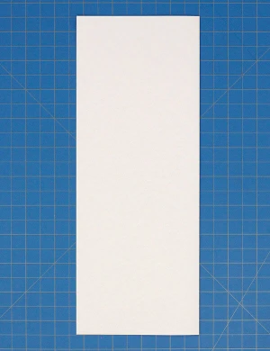
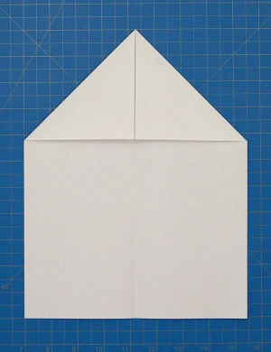
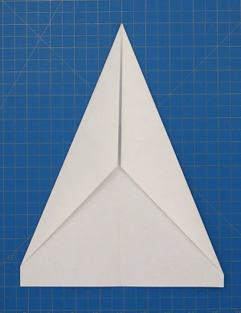
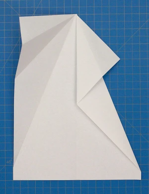
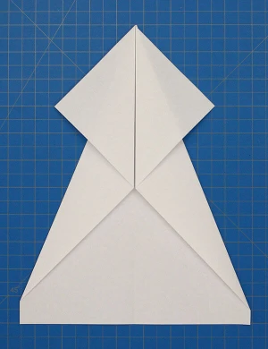
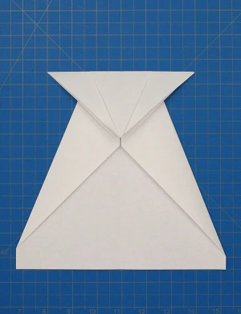
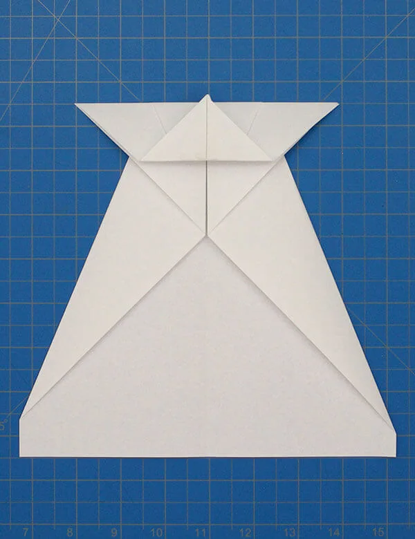
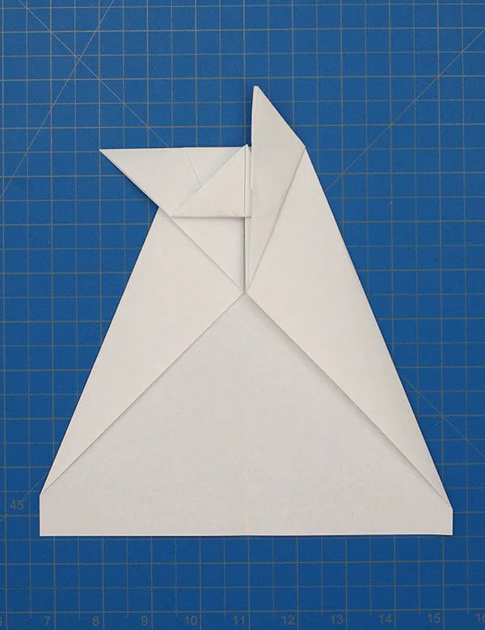
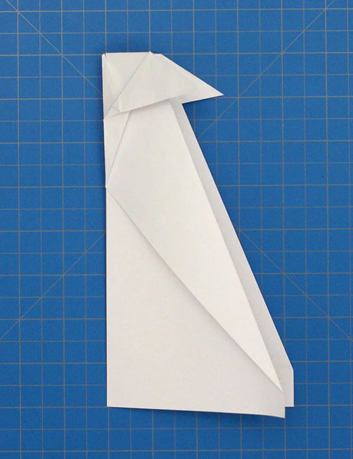

1Step 1
Make a vertical centre crease, then open the sheet.
Hangar figures for this design — distance in metres, hang time in seconds, and rank among scored planes — before you fold.
| Metric | Measured result | Hangar rank |
|---|---|---|
| Distance | 13–18 m (43–59 ft) | #15 of 37 |
| Hang time | 7–10 s | #4 of 36 |
Test conditions (same for every design we score): 70–80 gsm Letter or A4 printer paper; standing release at about 1.6 m shoulder height; calm indoor air (no wind); each thrower gets 10 attempts and we keep their best throw. Ranks compare only designs that cleared the scoring threshold under this protocol.

Make a vertical centre crease, then open the sheet.

Bring both upper corners into the centre.

Now fold the outer edges into the centre.

Open the sheet, fold the right side down so the second crease hits the midline, then fold the corner out.

Mirror the same fold on the opposite side.

Fold the tip down to where the other folds meet.

Now, fold the point back up to meet the top edge as shown in the guide.

Next, fold in the right outer flap as shown in the guide.

Repeat with the left flap as shown in the guide.

Fold out the right flap so that the crease lines up with the outer corner as shown in the guide.

Mirror the same fold on the opposite side.

Close the plane in half, folding away from you.

Fold down one wing as in the photo.

Finally, fold out the other wing as shown in the guide.
Our measured hangar result is 13–18 metres (about 43–59 feet), ranking #15 of 37 distance-rated designs. See the measured results table above the folding steps for metres, hangar rank, and the fixed protocol (70–80 gsm paper, ~1.6 m shoulder-height release, calm air, best of 10 throws per person).
Our measured hang time is 7–10 seconds, #4 of 36 for time aloft. See the measured results table above the folding steps for metres, hangar rank, and the fixed protocol (70–80 gsm paper, ~1.6 m shoulder-height release, calm air, best of 10 throws per person).
It is best for far, straight throws. Folding skill is advanced. Use Letter & A4, 14 steps, hands only.
Hold the plane level and throw with a smooth, firm push, aiming straight ahead rather than upward.